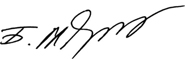

Trade Development Bank of Mongolia
Dear customers, business partners, stakeholders and associates,
The fiscal year of 2013 was a remarkable year for Trade and Development Bank of Mongolia (TDB). In the reporting year, the Bank has extended its leadership in the Mongolian banking sector by total assets and total loan portfolio and has been recognized as a bank with the highest net profit, which is a result of hard work and contribution of each employee of the Bank and effective cooperation of our customers and associates.
TDB underlined the year 2013 as “Efficiency Increasing Year” and worked with dedication on three main developments consisting of increasing efficiency of banking products and services by integrating, innovating and using internal resources with full capacity, improving interrelations of branches, settlement centers and other departments and implementing automation in order to reduce manual workload. TDB has been focusing on increasing its return on equity, efficiency per employee and per unit not only in the passing year, but has been keeping sustainable development and financial growth each year by monitoring, measuring, and maintaining successful and prompt management which are reflected in the financial performances.
Since 2005, the Bank has extended its mortgage loan service continuously even during the period of economic crisis. In that regard, TDB has taken the lead to support “Housing Mortgage Loan Program at 8 Percent of Annual Interest Rate” which is a sub-program of “Mongolian Construction Sector Development and Apartment Price Stabilization Program” which is implemented by the Government of Mongolia and the Bank of Mongolia from 2013 and organized an opening ceremony to provide housing mortgage program to the customers. Moreover, the Bank successfully transferred eligible mortgage loans of existing customers to loans with 8% p.a. interest rate without any added commissions.
In 2013, TDB introduced a product called “TDB Online” to the market, a leading edge internet banking system which was innovated according to our customer requirements. TDB Online service is proven to be essential with its rapid growing number of clients and spreading network in Mongolia. Furthermore, it is worth to mention that we have continuously performed improvements in our MostMoney service and made it more accessible to our users by partnering with all mobile phone operators.
One of the challenges of small and medium entrepreneurs (SMEs) is the lack of collateral. SMEs face challenges of lacking collateral when they request loan from banks to develop their business and increase their assets. As a result of standard for risk assessment and collateral evaluation of commercial banks, entrepreneurs do not receive the requested loan amount, or the collateral does not meet with eligibility criteria. In order to solve these issues, TDB has started cooperating with Mongolian Credit Guarantee Fund (MCGF). Efficient cooperation between MCGF and Commercial banks will have tremendous support for the SMEs profitability growth and further influence their business to expand to become a corporation.
As a bank that realizes its social responsibility, TDB has supported social classes which need our help and participated in many social events as a sponsor for brighter future of Mongolia. In particular, the Bank started a project of building 200 international standard bus stations with investment of MNT 15 billion to contribute to Ulaanbaatar city’s prosperity and development. We would like to express our gratitude and appreciation to all of our customers, local and international corporate clients as well as our business partners for continued cooperation, trust and dedication over the past 24 years. In 2014, TDB is aiming to broaden its network and increase the number of and further improve its products and services qualities to meet the increasing demand of our customers. Herewith, I am wishing you a happy and healthy life filled with positivity and honesty towards success. I would like to express my gratitude to TDB’s management team, Directors and Employees for their hard work.

Medree Badral
President
Medree Badral
President